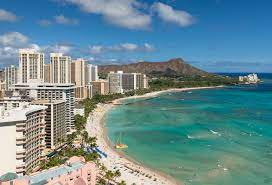
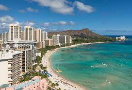

Address: 1 Crater Rim Drive, Hawaii National Park, Hawaii


Address: Waimea Canyon Drive, Uninc Kauai County, Hawaii


Location: Captain Cook, Hawaii


A virtual Tour Guide, that make's your trip easier
Hawaii is a U.S. state that is an archipelago in the Pacific Ocean. Of the eight major islands, Hawaii, Oʻahu, Maui, and Kauaʻi have major tourism industries, while it is limited on Molokai and Lānaʻi and access to Niihau and Kahoʻolawe is restricted. In 2017 alone, according to state government data, there were over 9.4 million visitors to the Hawaiian Islands with expenditures of over $16 billion.[1] Tourism makes up 21% of the state's economy, with many of Hawaii's largest industries revolving around the constant flow of tourists.[2] Due to the mild year-round weather, tourist travel is popular throughout the year. The summer months and major holidays are the most popular times for outsiders to visit, however, especially when residents of the rest of the United States are looking to escape from cold winter weather. The Japanese, with their economic and historical ties to Hawaii and the US as well as relative geographical proximity, make up the largest group of inbound international travelers to the islands, reaching 1,568,609 in 2017.[3] The average Japanese stays only 5 days while other Asians stay over 9.5 days and spend 25% more.[1]
 

The Sustainable Tourism Association of Hawaii (formerly the Hawaii Ecotourism Association) was founded in 1995 as a 501(c)(3) nonprofit to nurture the development of sustainable tourism in Hawaii. It offers a certification program to educate and recognize conservation-minded tour operators in Hawaii, the only such certification program of its kind in America.[125] The long term environmental implications that Hawaii is facing due to mass tourism has raised concern. To combat this and help raise awareness, international environmental organizations have joined forces with local island communities. There are major benefits to this type of management, usually described as "values-led management".[126] By prioritizing the values and existing sustainable practices by local communities living on heavily visited islands, it preserves their interests and further respects their culture.
Relax at the full-service spa, where you can enjoy massages, body treatments, and facials. When the sun is out, a round of golf or a day at the private beach are two great options for taking advantage of the fine weather. Additional amenities at this resort include complimentary wireless Internet access, concierge services, and an arcade/game room.Enjoy international cuisine at Hale Kai Restaurant, one of the resort's 4 restaurants, or stay in and take advantage of the room service (during limited hours). Snacks are also available at the coffee shop/café. Mingle with other guests at the complimentary reception, held daily. Relax with a refreshing drink from the beach bar or one of the 2 bars/lounges. Buffet breakfasts are available daily from 6:30 AM to 10:30 AM for a fee.Featured amenities include complimentary wired Internet access, a business center, and limo/town car service. Free self parking is available onsite.Make yourself at home in one of the 540 air-conditioned rooms featuring LCD televisions. Rooms have private lanais. Cable programming and video-game consoles are provided for your entertainment, with wired and wireless Internet access available for a surcharge. Private bathrooms with separate bathtubs and showers feature designer toiletries and hair dryers.Located in Kamuela, Fairmont Orchid is by the ocean, a 4-minute drive from Great 4-D Movie Ride and 9 minutes from Mauna Lani Beach. This 4.5-star resort is 7.2 mi (11.7 km) from Hapuna Beach State Park and 7.9 mi (12.7 km) from Mauna Kea Beach.

Pamper yourself with a visit to the spa, which offers massages and body treatments. After practicing your swing on the golf course, you can dip into one of the 2 outdoor swimming pools. This resort also features complimentary wireless Internet access, concierge services, and gift shops/newsstands.Enjoy Mediterranean cuisine at Meridia, one of the resort's 3 restaurants, or stay in and take advantage of the 24-hour room service. Snacks are also available at the coffee shop/café. Quench your thirst with your favorite drink at the bar/lounge. Buffet breakfasts are available daily from 6:30 AM to 10:30 AM for a fee.Featured amenities include a business center, limo/town car service, and complimentary newspapers in the lobby. This resort has 7 meeting rooms available for events. Self parking (subject to charges) is available onsite.Make yourself at home in one of the 249 air-conditioned rooms featuring LCD televisions. Your room comes with a pillowtop bed. Cable television is provided for your entertainment. Private bathrooms with separate bathtubs and showers feature complimentary toiletries and bidets.When you stay at The Westin Hapuna Beach Resort in Kamuela, you'll be on the beach, a 3-minute drive from Hapuna Beach State Park and 10 minutes from Mauna Kea Beach. This 4-star resort is 1.3 mi (2.1 km) from Waialea Beach and 2.5 mi (4 km) from Mauna Kea Resort Golf Course.
| 1. Waikiki Beach and Diamond Head State Monument: |
|
Waikiki, with its beautiful stretch of oceanfront beach, is Hawaii's biggest tourist attraction. A suburb of Honolulu, Waikiki is popular for its big resorts, dining, entertainment, and shopping. The Waikiki Historic Trail includes historic markers made of surfboards, inspired by Waikiki's own Duke Kahanamoku, an Olympic gold medalist swimmer and avid surfer. The boardwalk, known as the Waikiki Beach Walk, is lined with cafes and entertainment venues, while Kuhio and KalaKaua Avenues are where the bulk of the area's restaurants and boutiques can be found. Diamond Head State Monument sits at the end of the crescent-shaped beach, creating a distinctive profile on the coastline. It was once an important vantage point for the island's coastal defense, and a steep hike to the top brings you to the old bunkers and artillery control station and rewards your efforts with panoramic views. |
| 2. Pearl Harbor and USS Arizona Memorial |
|
Pearl Harbor is a National Historic Landmark and active military base that earned its place in history for the 1941 attack, which killed 1,177 servicemen on the USS Arizona. The site is now home to several attractions that are part of the World War II Valor in the Pacific Monument, including the USS Arizona Memorial, which floats above the remains of the sunken ship - parts of which can be seen protruding from the water. There is no cost for a tour of the memorial, however reservations are recommended due to its popularity. The Pearl Harbor Visitor Center has free admission and is the meeting place for tours, including transportation to the Pacific Aviation Museum on Ford Island, where visitors can see WWII aircraft and artifacts, as well as experience landing an airplane on an aircraft carrier in a flight simulator. Other attractions include the USS Oklahoma, USS Utah, and the Battleship USS Missouri whose deck can be toured by visitors. |
| 3. Hanauma Bay Nature Preserve |
|
Formed within the crater of a volcano on the island of Oahu, Hanauma Bay is a unique protected bay, which has been popular with snorkelers for a long time. After overuse caused pollution and damage to the delicate reef ecosystem, restoration efforts have restored the bay to its original splendor, and it is again open to visitors. The Hanauma Bay Education Center is a great place to learn about the bay, and there are several snorkeling rental shops that offer lessons, so that visitors can see the breathtaking reef system and its inhabitants up-close. At one time, feeding the tropical fish frozen peas was a touristy thing to do; this practice is no longer allowed. Also, to safeguard the area for future generations, all first-time visitors are required to watch a nine-minute video on marine life, safety rules, and preservation. Equipment rentals, including life jackets and snorkeling gear, are available at the kiosk in the park. Securing a spot in the pay parking lot can be tricky sometimes, as the 300-car lot fills up quickly in the winter. A per-person fee is charged to enter the park for those 12 years and older, although Hawaii residents get in for free. |
| 4. Volcanoes National Park |
|
Located on the Big Island of Hawaii, Volcanoes National Park offers a
unique, close-up look at an active volcano system where lava seeps
from fissures in the earth. The surrounding landscape is shaped by
cooled lava rock, both old and new, which has flowed over roads in a
display of its unstoppable force. The park's centerpiece, Kilauea, has
been active recently, including an eruption in January 2021 that
formed a lava lake. Visitors should be aware that portions of the park
are closed during periods of seismic activity that might pose a
threat. The park has many things to do and see, including the Thurston
Lava Tube, Devastation Trail, and the steaming Halema'uma'u crater.
During the area's most active periods, tourists have the chance of
experiencing the thrill of feeling seismic activity, hearing the boom
of gas emissions, or even seeing a pillar of ash escaping into the
air.
Address: 1 Crater Rim Drive, Hawaii National Park, Hawaii |
| 5. Haleakala National Park |
|
Located on Maui, Haleakala National park offers access to the inactive Haleakala Volcano, which stands at over 10,000 feet. Views from the summit stretch across the entire island and are particularly beautiful at sunrise. The dormant crater is exposed, showing a lunar-like landscape, while other areas of the park are covered in subtropical rain forests, which are home to endangered species. Visitors can explore the many hiking trails freely or sign up for guided ranger-led tours, and the more adventurous can spend the night in the park, surrounded by one of Hawaii's most impressive landscapes. |
| 6. Waimea Canyon State Park |
|
Waimea Canyon, located on the west side of the island of Kauai, is
often referred to as the "Grand Canyon of the Pacific." The canyon
stretches over ten miles long, reaches depths of 3,600 feet, and is a
mile wide at some points. This dramatic spectacle can be viewed best
from the two main lookouts, Puu ka Pele and Puu hinahina. The canyon's
landscape features rock strata in varying colors and several stunning
waterfalls. Guided tours along the many challenging hiking trails and
rafting tours that explore the river below are available, and there
are additional trails for all skill levels at the nearby Kokee State
Park.
Address: Waimea Canyon Drive, Uninc Kauai County, Hawaii |
| 7. Na Pali Coast State Wilderness Park |
|
The Na Pali Coast State Wilderness Park on the island of Kauai contains some of the world's most dramatic landscapes. These were made famous in the film Jurassic Park, which shows a dramatic coastline with cliffs that seem to ripple and the "Wall of Tears" on Mount Waialeale, named for the way in which hundreds of waterfalls weep from the slopes of the mountain. Some of the best ways to take in the scene are to approach by water or to take a helicopter tour to view the simply breathtaking sight from above. Expert hikers can try the Kalalau Trail, an eleven-mile trek, which traverses five valleys and takes a full day each way. |
| 8. Kona Coffee Living History Farm |
|
The Kona Coffee Living History Farm is the only living history farm in
the nation that is dedicated to the history and traditions of coffee
farming. Costumed interpreters can be found throughout the grounds,
going about daily tasks, from food preparation to farming chores,
always happy to answer questions. You are free to explore the
plantation, which still produces coffee, where you might even spot a
Kona Nightingale. You can also find tours of modern Kona coffee
producers, including plantation tours at Hula Daddy and roasting
facility tours at Mountain Thunder Plantation.
Location: Captain Cook, Hawaii |
| 9. Hana Road | |
The dramatic Hana Road, officially named Hana Highway, is a scenic 52-mile stretch of highway on the island of Maui that winds from Pāʻia through lush forests and along the coast to the remote town of Hana. This trip is worthwhile for the sightseeing along the stunning drive, the things to do along the way, and the visit to the town itself. Attractions along the route include numerous hiking trails, waterfalls, scenic overlooks, and beaches. Hana's location, relatively cut off from the rest of the island, has allowed it to maintain more of a traditional Hawaiian culture than other towns. |
| 10. Waipio Valley Lookout |
|
One of the most scenic spots on the Big Island of Hawaii is the lookout over Waipio Valley. Surrounded by lush cliff walls, the fertile valley opens out to the ocean, where the black-sand beach is met with white waves and blue water. Hiking in Waipio Valley is considered some of the best in the state, and many of the trails are suitable for beginners. For an extra special experience, local guides provide horseback riding tours of the valley, allowing you to enjoy the sights from a different perspective. |